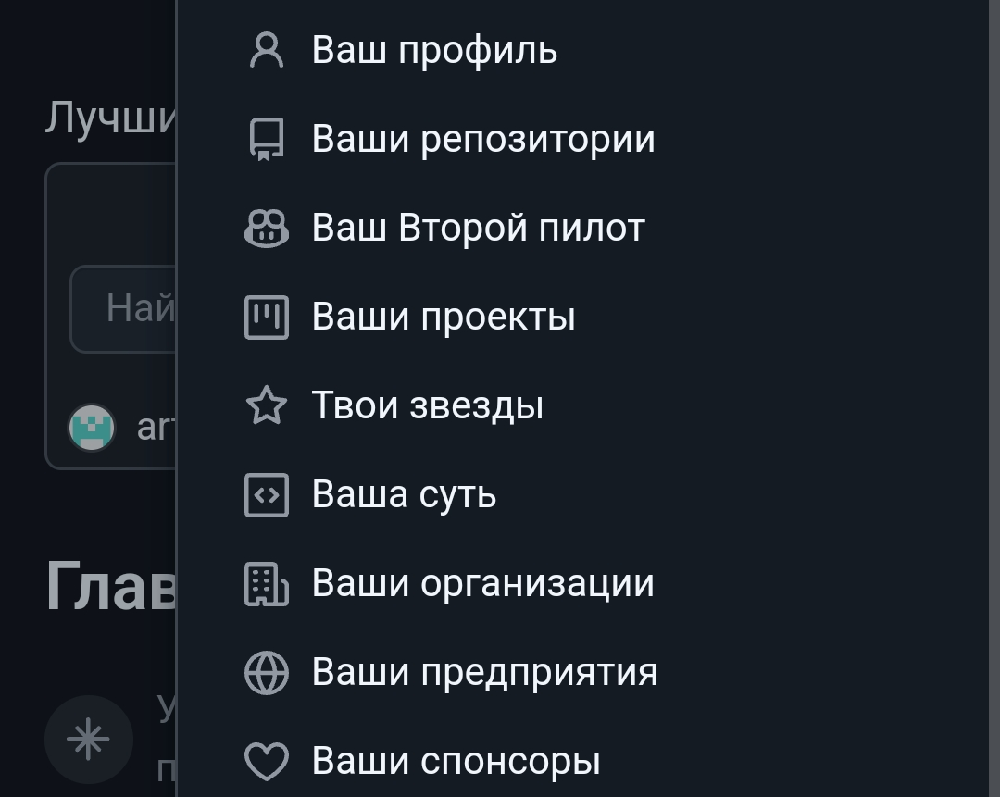

Привет!
Сегодня я научу вас
выкладывать свой проект на GitHub и расскажу про его + и -
Инфа про GitHub и т.д.:
Создание сайта на GitHub – это отличный способ продемонстрировать свои проекты и навыки программирования. Платформа предоставляет множество возможностей для разработчиков, позволяя не только хранить код, но и делиться им с обществом.Первое, что стоит отметить – это простота регистрации и доступность GitHub для новичков. После регистрации вы получаете доступ к обширной экосистеме инструментов, которые помогут вам управлять вашим кодом и сотрудничать с другими разработчиками. Важно помнить, что GitHub не просто хранилище – это сообщество, где вы можете находить единомышленников и получать отзывы о своих проектах.
Когда вы решите выложить свой проект, у вас есть возможность выбрать между публичными и приватными репозиториями. Публичные репозитории позволяют вашему коду быть доступным для всех, что может привлечь внимание потенциальных работодателей или коллег. Однако приватные репозитории обеспечивают конфиденциальность и защищают вашу интеллектуальную собственность, что может быть критически важным в некоторых случаях.
Кроме того, GitHub предлагает множество интеграций и инструментов для автоматизации рабочего процесса. Вы можете использовать GitHub Actions для автоматического развертывания вашего проекта или интеграции с другими сервисами. Это значительно упрощает процесс разработки и позволяет сосредоточиться на создании качественного продукта.
Однако стоит учитывать и некоторые минусы. Например, у новичков может возникнуть сложность в освоении системы контроля версий Git, которая является основой работы с GitHub. Поначалу может показаться запутанным, но со временем, с практикой, вы обязательно освоите этот инструмент.
Итак, GitHub – это не только возможность хранения и публикации вашего кода, но и мощный инструмент для общения и сотрудничества с другими разработчиками. Каждая из ваших публикаций может стать шагом к новым возможностям и открытиям в мире программирования.
Как выложить свой проект на GitHub:1. Зарегистрируйтесь на нем.
2. Нажмите "Создать репозиторий" (сначала нажмите "Ваши репозитории").
3. Создайте его, кроме названия, описание и т.д. ничего не трогайте.
4. Нажмите "Загрузить файл" (эта кнопка синяя).
5. Загрузите свой файл (нужно, чтобы он был с припиской .html).
6. Нажмите на 3 точки, настройки, pages (если вы на телефоне, листайте вниз, там и будет важное).
7. Измените "Breach" на "main" и ставим папку /(root).